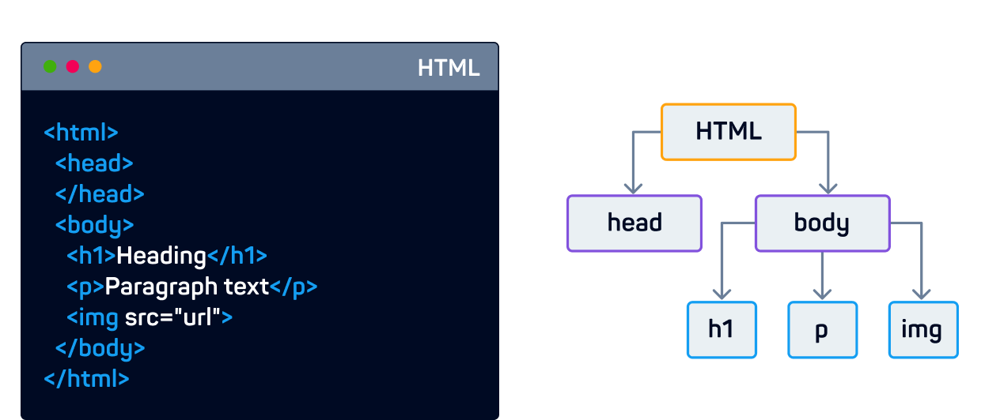

A estrutura de uma págna web pode ser representada como uma árvore. Isso é útil ao criar páginas dinâmicas.
Assim como em uma árvore genealógica, existem relações entre diferentes elementos em uma página.
Você pode se referir a qualquer elemento no DOM de uma página com código JavaScript.
Document.getElementById() é usado para acessar elementos em uma página com ID específico.
<p id="p1">Aqui é um parágrafo </p>
<script>
document.getElementById('p1').textContent = 'Parágrafo alterado';
</script>
Propriedade DOM são valores(de elementos HTML) que você pode obter, definir ou alterar.
.textContent é usado para acessar o conteúdo de texto de um elemento.
Você pode usar variáveis para armazenar informações sobre os elementos HTML
<p id="t1">Aqui vai um parágrafo</p>
<script>
let c = document.getElementById('t1').textContent;
console.log(c);
alert(c)
</script>
Toda vez que você precisa modificar um elemento do DOM, você precisa acessá-lo primeiro. Uma maneira conveniente de manter o elemento na memória de trabalho é armazenar seus detalhes em uma variável que você pode chamar mais tarde no seu código, quantas vezes precisar.
let paragrafo3 = document.getElementById('p3');
Você pode modificar elementos alterando as propriedades DOM no código JavaScript.
<p id="p1">Aqui é um parágrafo</p>
<script>
let p = document.getElementById('p1');
p.style.color = "blue";
p.style.border = "solid";
</script>